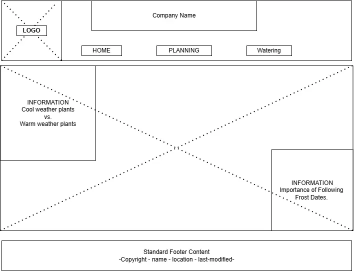
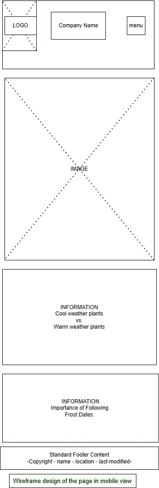

Plan when to plant your vegetable garden
This website will target gardeners living in Central Washington. It will assist vegetable gardeners in determining what plants to plant in spring versus summer. users will be able to select from an assortment of common home-grown vegetables. Based on their selections, the website will display the estimated best planting times, including whether seeds should be started indoors or planted outdoors as well as local frost dates.
Scenarios
Why are frost dates important? Frost dates are important for gardeners to understand to keep plants growing healthy and thriving. Some plants when exposed to frost can become damaged or even die.
can frost sensitive plants be started indoors earlier to extend the growing season? Yes, starting frost-sensitive plants indoors can allow gardeners to extend the growing season. By starting seeds indoors, gardeners can give plants a head start before transplanting them outdoors after the last frost date. This can lead to earlier harvests and a longer growing season for certain crops.

